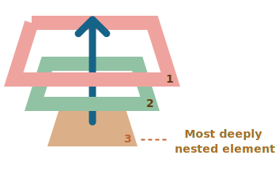

Tester la propagation des évenèments
La propagation des évènements est un concept important en JavaScript. Lorsqu'un évènement se produit sur un élément, il se propage de l'élément enfant à l'élément parent. Un exemple simple est le clic sur un bouton. Lorsque vous cliquez sur un bouton, l'évènement de clic se propage de l'élément bouton à l'élément parent.
EM, le gestionnaire sur la DIV s'exécute.
N'est-ce pas un peu étrange ? Pourquoi le gestionnaire sur la <div> s'exécute-t-il lorque l'on clique effectivement sur <em> ?
Le principe de la propagation est simple.
Qu'est-ce que l'Event Bubbling ? La propagation d'événements est un concept du DOM (Document Object Model). Il se produit lorsqu'un élément cible reçoit un événement, et que cet événement remonte (on peut dire qu'il est transmis ou propagé) à ses éléments parents et ancêtres dans l'arbre DOM jusqu'à l'élément racine.
Supposons que nous ayons 3 éléments imbriqués FORM > DIV > P avec un gestionnaire sur chacun d'entre eux :
Un clic sur la partie intérieure de <p> exécute onclick d'abord :

<p> étant l'élément le plus profondément imbriqué
ATTENTION
Presque tous les événements sont des "bulles" et sont propageable.
Le mot clé de cette phrase est "presque".
Par exemple, un événement de type focus ne fait pas de bulles. Il y a d'autres exemples, nous les rencontrerons.
Mais il s'agit toujours d'une exception, plutôt que d'une règle, car la plupart des événements font des bulles.
Lorsque l'évènement se propage, il passe par plusieurs éléments. La plupart de ces éléments ne sont pas ceux sur lesquels l'évènement s'est produit. Mais il y a toujours un seul élément sur lequel l'évènement s'est produit réellement. Il est appelé l'élément cible.
Il faut savoir qu'un gestionnaire sur un élément parent peut toujours obtenir des détails sur l'endroit où l'évènement s'est
produit.
L'élément le plus profondément imbriqué à l'origine de l'événement est appelé élément cible, accessible sous
la forme d'un event.target.
Notez les différences entre this et event.target :
Important, par exemple, si nous avons un seul gestionnaire sur le formulaire : form.onclick, il peut "attraper" tous les clics à l'intérieur du formulaire. Quel que soit l'endroit où le clic s'est produit, il remonte jusqu'à <form> et exécute le gestionnaire.
Dans le gestionnaire form.onclick :
Il est bien entendu possible que event.target corresponde à this. Cela se produit lorsque le clic est effectué directement sur l'élément <form>.
Un événement part de l'élément cible et se propage vers le haut.
Normalement, il remonte jusqu'à l'élément <html>, ensuite jusqu'à l'objet <document>. Certains événements atteignent
même la fenêtre ( l'objet window), appelant tous les gestionnaires sur son chemin.
Mais n'importe quel gestionnaire peut décider que l'événement a été entièrement traité et arrêter la propagation.
La méthode pour cela est event.stopPropagation().
Dans l'exemple ci-dessous, body.onclick ne fonctionne pas si vous cliquez sur
l'élément <button> :
A savoir : event.stopImmediatePropagation()
Si un élément possède plusieurs gestionnaires d'événements, même si l'un d'entre eux arrête la propagation, les autres continuent
à s'exécuter.
En d'autres termes, event.stopPropagation() arrête la remontée, mais sur l'élément actuel, tous les autres gestionnaires
continue de s'exécuter.
Pour arrêter la propagation et empêcher les gestionnaires de l'élément courant de s'exécuter, il existe une méthode :
event.stopImmediatePropagation(). Après cette méthode, aucun autre gestionnaire ne s'exécute.
ATENTION : N'arrêtez pas la propagation sans en avoir une réelle nécessité !
La propagation est pratique. Ne l'arrêtez pas sans un besoin réel, évident et architecturalement bien pensé.
Parfois, event.stopPropagation() crée des pièges cachés qui peuvent devenir des problèmes par la suite.
Par exemple :
Il n'est généralement pas nécessaire d'empêcher la propagation. Une tâche qui semble l'exiger peut être résolue par d'autres moyens. L'un d'entre eux consiste à utiliser des événements personnalisés, que nous aborderons plus tard. Nous pouvons également écrire nos données dans l'objet événement dans un gestionnaire et les lire dans un autre, de sorte que nous pouvons transmettre aux gestionnaires sur les parents des informations sur le traitement ci-dessous.
Il existe une autre phase du traitement des événements appelée "capture". Elle est rarement utilisée dans le code réel, mais peut parfois être utile.
Le standard DOM Events décrit 3 phases de propagation des événements :
Voici l'image, tirée de la spécification, des phases de capture (1), de ciblage (2) et de bouillonnement (3) pour un événement de clic sur un
En d'autres termes, pour un clic sur <td>, l'événement passe d'abord par la chaîne des ancêtres jusqu'à l'élément (phase de capture), puis il atteint la cible et s'y déclenche (phase de cible), et enfin il remonte (phase de bouillonnement), en appelant les gestionnaires sur son chemin.
Jusqu'à présent, nous n'avons parlé que du bouillonnement, car la phase de capture est rarement utilisée. En fait, la phase de capture était invisible pour nous, parce que les gestionnaires ajoutés en utilisant la propriété on<event> ou en utilisant les attributs HTML ou en utilisant l'argument double addEventListener (event, handler) ne savent rien de la capture, ils ne fonctionnent que sur les 2ème et 3ème phases.
Pour capturer un événement lors de la phase de capture, nous devons définir l'option de capture du gestionnaire à true :
Il existe deux valeurs possibles pour l'option capture :
Si elle est fausse (valeur par défaut), le gestionnaire est activé lors de la phase de bouillonnement.
Si elle est vraie, le gestionnaire est activé lors de la phase de capture.
Notez que, bien qu'il y ait formellement 3 phases, la deuxième phase ("phase cible" : l'événement a atteint l'élément)
n'est pas traitée séparément : les gestionnaires des phases de capture et de bouillonnement se déclenchent à cette phase.
Voyons ce qu'il en est de la capture et du bouillonnement en action :
Le code définit des gestionnaires de clics sur chaque élément du document pour voir lesquels fonctionnent.
Si vous cliquez sur <p>, la séquence est la suivante :
HTML → BODY → FORM → DIV -> P (phase de capture, le premier auditeur) :
P → DIV → FORM → BODY → HTML (phase de bouillonnement, le deuxième auditeur).
Notez que le P apparaît deux fois, car nous avons défini deux listeners : capturing et bubbling. La cible se déclenche à la fin de la
première phase et au début de la seconde.
Il existe une propriété event.eventPhase qui nous indique le numéro de la phase sur laquelle l'événement a été capturé. Mais elle est
rarement utilisée, car nous la connaissons généralement dans le gestionnaire.
Pour supprimer le gestionnaire, removeEventListener a besoin de la même phase
Si nous ajoutons un addEventListener(..., true), nous devons mentionner la même phase dans removeEventListener(..., true)
pour supprimer correctement le handler.
Les gestionnaires d'un même élément et d'une même phase fonctionnent dans l'ordre prévu.
Si nous avons plusieurs gestionnaires d'événements sur la même phase, assignés au même élément avec addEventListener,
ils s'exécutent dans le même ordre que celui dans lequel ils ont été créés.
La fonction event.stopPropagation() pendant la capture empêche également la formation de bulles.
La méthode event.stopPropagation() et sa sœur event.stopImmediatePropagation() peuvent également être appelées
lors de la phase de capture. Dans ce cas, non seulement la poursuite de la capture est stoppée, mais aussi la formation de bulles.
En d'autres termes, normalement, l'événement descend d'abord ("capture") et remonte ensuite ("bouillonnement").
Mais si event.stopPropagation() est appelé pendant la phase de capture, le déplacement de l'événement s'arrête
et il n'y a pas de bouillonnement.